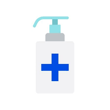

A novel coronavirus (COVID-19) is a new strain of coronavirus. The disease caused by the novel coronavirus first identified in Wuhan, China, has been named coronavirus disease 2019 (COVID-19) – ‘CO’ stands for corona, ‘VI’ for virus, and ‘D’ for disease. Formerly, this disease was referred to as ‘2019 novel coronavirus’ or ‘2019-nCoV.’ The COVID-19 virus is a new virus linked to the same family of viruses as Severe Acute Respiratory Syndrome (SARS) and some types of common cold.
The virus is transmitted through direct contact with respiratory droplets of an infected person (generated through coughing and sneezing), and touching surfaces contaminated with the virus. The COVID-19 virus may survive on surfaces for several hours, but simple disinfectants can kill it.
Symptoms can include fever, cough and shortness of breath. In more severe cases, infection can cause pneumonia or breathing difficulties. More rarely, the disease can be fatal. These symptoms are similar to the flu (influenza) or the common cold, which are a lot more common than COVID-19. This is why testing is required to confirm if someone has COVID-19. It’s important to remember that key prevention measures are the same – frequent hand washing, and respiratory hygiene (cover your cough or sneeze with a flexed elbow or tissue, then throw away the tissue into a closed bin).
Here are four precautions you and your family can take to avoid infection:
Wash your hands frequently using soap and water or an alcohol-based hand rub.

Cover mouth and nose with flexed elbow or tissue when coughing or sneezing. Dispose used tissue immediately.

Avoid close contact with anyone who has cold or flu-like symptoms.
Seek medical care early if you or your child has a fever, cough or difficulty in breathing.
The use of a medical mask is advised if you have respiratory symptoms (coughing or sneezing) to protect others. If you don’t have any symptoms, then there is no need to wear a mask. If masks are worn, they must be used and disposed of properly to ensure their effectiveness and to avoid any increased risk of transmitting the virus. The use of a mask alone is not enough to stop infections and must be combined with frequent hand washing, covering sneezes and coughs, and avoiding close contact with anyone with cold or flu-like symptoms (coughing, sneezing, fever).
It is possible for people of any age to be infected with the virus, but so far there have been relatively few cases of COVID-19 reported among children. The virus is fatal in rare cases, so far mainly among older people with pre-existing medical conditions.

Seek medical attention, but remember that it’s flu season in the Northern Hemisphere, and symptoms of COVID-19 such as cough or fever can be similar to those of the flu, or the common cold – which are a lot more frequent. Continue to follow good hand and respiratory hygiene practices like regular handwashing, and keep your child up to date with vaccinations – so that your child is protected against other viruses and bacteria causing diseases. As with other respiratory infections like the flu, seek care early if you or your child are having symptoms, and try to avoid going to public places (workplace, schools, public transport), to prevent spread to others.
You should seek medical care early if you or your child has a fever, cough or difficulty breathing. Consider calling ahead to tell your health care provider if you have traveled to an area where COVID-19 has been reported, or if you have been in close contact with someone with who has traveled from one of these areas and has respiratory symptoms.
If your child is having symptoms, seek medical care, and follow the instructions from the health care provider. Otherwise, as with other respiratory infections like the flu, keep your child well rested at home while symptomatic, and avoid going to public places, to prevent spread to others. If your child isn’t displaying any symptoms such as a fever or cough – and unless a public health advisory or other relevant warning or official advice has been issued affecting your child’s school – it’s best to keep your child in class. Instead of keeping children out of school, teach them good hand and respiratory hygiene practices for school and elsewhere, like frequent handwashing (see below), covering cough or sneeze with a flexed elbow or tissue, then throwing away the tissue into a closed bin, not touching their eyes, mouths or noses if they haven’t properly washed their hands.
Wet hands with running water.
Apply enough soap to cover wet hands.
Scrub all surfaces of the hands – including back of hands, between fingers and under nails – for at least 20 seconds.
Rinse thoroughly with running water.
Dry hands with a clean cloth or single-use towel Wash your hands often, especially before eating; after blowing your nose, coughing, or sneezing; and going to the bathroom. If soap and water are not readily available, use an alcohol-based hand sanitizer with at least 60% alcohol. Always wash hands with soap and water, if hands are visibly dirty.
Anyone planning a trip overseas should always check the travel advisory for their destination country for any restrictions on entry, quarantine requirements on entry, or other relevant travel advice. In addition to taking standard travel precautions, and in order to avoid being quarantined or denied re-entry into your home country, you are also advised to check the latest COVID-19 update on the International Air Transport Association website, which includes a list of countries and restriction measures. While traveling, all parents should follow standard hygiene measures for themselves and their children: Wash hands frequently or use an alcohol-based sanitizer with at least 60 per cent alcohol, practice good respiratory hygiene (cover your mouth and nose with your bent elbow or tissue when you cough or sneeze and immediately dispose of the used tissue) and avoid close contact with anyone who is coughing or sneezing. In addition, it is recommended that parents always carry a hand sanitizer, pack of disposable tissues, and disinfecting wipes. Additional recommendations include: Clean your seat, armrest, touchscreen, etc. with a disinfecting wipe once inside an aircraft or other vehicle. Also use a disinfecting wipe to clean key surfaces, doorknobs, remote controls, etc at the hotel or other accommodation where you and your children are staying.